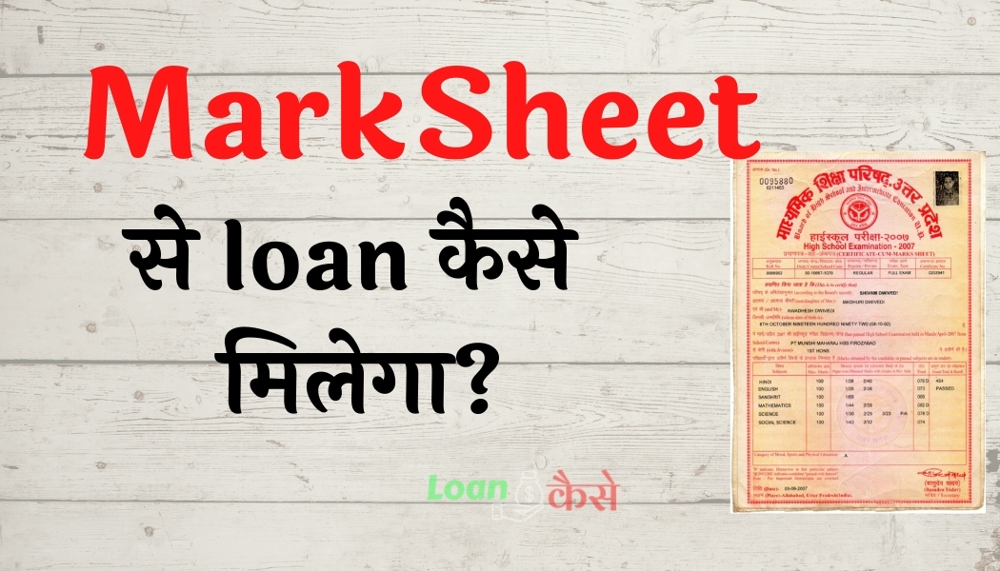

तो आज हम बात करने वाले हैं मार्कशीट लोन के बारे में अगर आप 10वीं और 12वीं पास हो चुके हैं तो आपके पास मार्कशीट जरूर होगा उस मार्कशीट की मदद से आप लोन ले सकते हैं।
दोस्तों आज आप जानेंगे की Marksheet se loan kaise liya jata hai ? अगर आप 10वीं और 12वीं पास हो चुके हैं और आगे की पढ़ाई करने के लिए आपके पास पैसे नहीं हैं ,लेकिन फिर भी आप पढ़ाई करना चाहते हैं तो आप बैंक में अपना मार्कशीट दिखा कर मार्कशीट से लोन लेकर के आप आगे की पढ़ाई कर सकते हैं।
दोस्तों आज हम बात करेंगे कि कैसे आप बैंक में जाकर के वहां से अपने मार्कशीट दे कर के स्टूडेंट लोन के लिए अप्लाई कर के स्टूडेंट लोन ले सकते हैं।
दोस्तों अगर आप भी परेशान हो चुके हैं अपने मार्कशीट को लेकर घूम रहे हैं आपको कोई भी बैंक मार्कशीट से लोन नहीं दे रही है तो आज के इस पोस्ट में आप जानेंगे की Marksheet se loan kaise liya jata hai.
हो सकता है कि आप सही बैंक में नहीं जा रहे होंगे गलत बैंक में जा रहे हैं इसीलिए आपको मार्कशीट से लोन लेने में परेशानी हो रही है लेकिन आज हम आपको इस पोस्ट में बताएंगे कि आपको किस बैंक में जाना है और किस तरह से उन बैंक मैनेजर से बात करके मार्कशीट लोन के लिए अप्लाई करना है।
तो दोस्तों अगर आप एक स्टूडेंट हैं और 10वीं या 12वीं का मार्कशीट आपके पास है और आपको पढ़ाई करने के लिए पैसे की जरूरत है तो हमारे साथ बने रहिए इस पोस्ट को अंत तक पढ़िए तभी आप समझ पाएंगे की Marksheet se loan kaise liya jata hai।
Also Read:-
- Ghar Baithe Online Paise Kaise Kamaye
- Loan margin money क्या होता है?
- New GST rates: जानिए आज से क्या हुई है सस्ती और क्या हुआ है महँगा?
- Epfo Balance Kasie check Karen-New Interest rate 8.1%
- Bank में जॉब कैसे पाएँ?(Bank Me Job Kaise Paye)
{kind=link}

मार्कशीट लोन क्या है-(what is mark sheet loan)?
दोस्तों Marksheet se loan kaise liya jata hai यह जानने से पहले सबसे पहले जानते हैं कि आखिर मार्कशीट लोन है क्या, दोस्तों जैसा कि इसके नाम से ही पता चल रहा है कि यह लोन मार्कशीट पर मिलता है कहने का मतलब यह है कि सरकार उन छात्रों को मदद के तौर पर लोन देकर 10वीं और 12वीं के बाद पढ़ाई करने का मौका देती है जिन छात्रों के पास उच्च शिक्षा प्राप्त करने के लिए पैसे उपलब्ध नहीं होते हैं और पैसे नहीं होने के कारण उन्हें अपनी पढ़ाई छोड़नी पड़ जाती है ।
इस तरह के छात्रों को पढ़ाई में मदद करने के लिए सरकार स्टूडेंट लोन स्कीम लेकर आई है इस स्कीम के तहत आप अपने 10वीं और 12वीं की मार्कशीट दिखा कर आगे की पढ़ाई के लिए लोन ले सकते हैं और पढ़ाई करने के बाद जब आप कुछ पैसे कमाने लगेंगे अब आप इस लोन को वापस कर सकते हैं.
Marksheet se loan kitana milega?(मार्कशीट से लोन कितना मिलेगा?)
दोस्तों अगर आप एक स्टूडेंट हैं तो मार्कशीट से आपको कोई भी काम करने के लिए लोन नहीं मिलेगा सिर्फ आपको पढ़ाई करने के लिए लोन मिलेगा इसमें आपको एक से डेढ़ लाख रुपए ज्यादा से ज़्यादा ₹200000 मिलेंगे डिपेंड करता है कि आप 10वीं या 12वीं के बाद कौन सी पढ़ाई पढ़ने जा रहे हैं और आप जो पढ़ाई करने जा रहे हैं उस पढ़ाई में कितने फीस लगने वाले हैं उस फीस के हिसाब से आपको बैंक लोन प्रोवाइड करती है।
तो अगर आप किसी भी बैंक में मार्कशीट से लोन लेने जा रहे हैं तो सबसे पहले आपको यह जानना जरूरी है कि आप जिस पढ़ाई के लिए लोन अप्लाई करने जा रहे हैं उस पढ़ाई में कितना खर्च आने वाला है इसके लिए आपको सबसे पहले उस संस्थान से संपर्क करना है जहां आप 10वीं और 12वीं के बाद पढ़ाई करना चाह रहे हैं वहां से आपको उस संस्थान के फी स्ट्रक्चर के बारे में पता चलेगा उसके बाद ही आपको लोन के लिए अप्लाई करना है।
मार्कशीट लोन लेने के क्या फायदे हैं (Advantages of marks sheet loan)?
दोस्तों मार्कशीट से लोन लेने के बहुत सारे फायदे हैं दोस्तों यह लोन अन्य सभी लोन से बिल्कुल अलग है क्योंकि यह लोन सिर्फ स्टूडेंट के लिए लाई गई है इसीलिए इस लोन को काफी आसान बनाया गया है और इसके बहुत सारे फायदे हैं:-
- Marksheet se loan लेने पर इसमें ब्याज दर कम लगता है सिर्फ नाम मात्र का लगता है इसमें 6% से लेकर 11% तक ब्याज दर लगता है जो बाकी सभी लोन से काफी कम है।
- मार्कशीट लोन लेने के लिए प्रोसेसिंग थे बहुत कम लगता है कुछ बैंक्स में तो प्रोसेसिंग थे कुछ भी नहीं लगता है।
- इसमें आपको कोई भी कॉलेटरल जमा नहीं करना पड़ता है इस लोन की सबसे बड़ी खासियत है यह है किसी भी तरह का कोई गारंटी आपको इसमें नहीं देनी होगी.
- Tax में भी छूट मिलता है ।
कौन-कौन से बैंक मार्कशीट पर लोन देती है (Marksheet se loan ka un se banks deti hai)?
दोस्तों आजकल सभी सरकारी और निजी बैंक्स स्टूडेंट को उनके मार्कशीट पर लोन देती है इस लोन को स्टूडेंट लोन कहा जाता है तो आपको अपने नजदीक के बैंक में जाकर के मार्कशीट लोन के लिए अप्लाई करना है इसमें बैंक मैटर नहीं करते हैं आपको यह देखना है कि किस बैंक का मैनेजर आपसे अच्छे से बात करता है उस बैंक में जाकर आपको मार्कशीट लोन के लिए अप्लाई करना है।
Marksheet se loan kaise liya kya kya requirement hai?
दोस्तों अगर आप बैंक का चुनाव कर चुके हैं साथ-साथ आपको कितने रुपए के लोन की आवश्यकता है यह सब पता कर चुके हैं तो अब आपको यह भी जानना जरूरी है कि मार्कशीट लोन अप्लाई करने के लिए रिक्वायरमेंट क्या-क्या है तो आइए जानते हैं कि मार्कशीट लोन के लिए क्या रिक्वायरमेंट है:-
- सबसे पहले तो आपका उस बैंक में खाता होना चाहिए जिस बैंक में आप मार्कशीट लोन लेने के लिए अप्लाई करने जा रहे हैं अगर खाता नहीं है तो सबसे पहले आपको बैंक में अपना खाता खुलवाना चाहिए।
- जिस पढ़ाई के लिए आप लोन लेने जा रहे हैं उस पढ़ाई के बारे में कुछ जानकारी आपको पहले से ले लेनी है हो सकता है कि बैंक मैनेजर आपसे कुछ सवाल जवाब आपके पढ़ाई के बारे में करें अगर आप सही सही जवाब देंगे तब बैंक मैनेजर को समझ में आ जाएगा कि आप उस पढ़ाई के लायक हैं तब हो सकता है कि आपको लोन अप्रूव कर दे।
- लोन के लिए आवेदक की मानसिक स्थिति ठीक होनी चाहिए वह किसी भी तरह का पागलपन या दिवालिया टाइप का इंसान नहीं होना चाहिए।
- आवेदक पहले से किसी और बैंक में अगर लोन लिया है तो उसे लोन नहीं मिलेगा
- पहले से कोई लोन बकाया नहीं होना चाहिए ऐसे में स्टूडेंट लोन तो क्या कोई भी लोन नहीं मिलने वाला है।
Mark sheet se loan lene ke liye documents kya kya chahiye?
दोस्तों जैसा कि आपको पता है की मार्कशीट लोन के लिए डॉक्यूमेंट बहुत ज्यादा जरूरी है क्योंकि इसमें कोई कॉलेटरल नहीं देना पड़ता है इसीलिए आपके पास सभी डाक्यूमेंट्स होने चाहिए तो आइए जानते हैं कि मार्कशीट लोन लेने के लिए कौन कौन से डॉक्यूमेंट आपके पास होने चाहिए।
- कोई भी पहचान पत्र इसके लिए आपको आधार कार्ड, वोटर आईडी, ड्राइवरी लाइसेंस, पासपोर्ट) इनमें से कोई भी एक या इसके अलावा फोटोयुक्त कोई भी पहचान पत्र जिससे आपका पहचान किया जा सके जरूरी है।
- पैन कार्ड
- 10वीं और 12वीं पास होने के सर्टिफिकेट और मार्कशीट
- निवास प्रमाण पत्र( बिजली बिल, टेलीफोन बिल, पानी बिल, पोस्टपेड मोबाइल बिल, या कोई और प्रमाण पत्र जो आपके रेसिडेंस का प्रूफ देता हो) इनमें से कोई भी एक आप लगा सकते हैं
- पिछले 3 महीने का बैंक स्टेटमेंट और बैंक पासबुक का पहला पेज की फोटो कॉपी चाहिए।
- जिस पढ़ाई के लिए आप लोन ले रहे हैं उस पढ़ाई में कितना पैसा लगेगा उसका फीस स्ट्रक्चर यानी कि कोटेशन उस संस्थान से लेकर के देना होगा।
Application process Mark sheet se loan kaise liya jata hai?
ऊपर के सभी डॉक्यूमेंट और रिक्वायरमेंट पूरा हो जाने के बाद अब आपको हम बताते हैं कि लोन के लिए एप्लीकेशन कैसे करना है इसके लिए आप नीचे दिए गए स्टेप को फॉलो कर सकते हैं तभी आप मार्कशीट से लोन ले पाएंगे:-
- सबसे पहले आपको उस बैंक में जाना है जिसमें अंक में आपका खाता है और जिस बैंक से आप मार्कशीट लोन के लिए अप्लाई करने वाले हैं ।
- उसके बाद आपको पता करना है कि लोन के लिए कहां पर अप्लाई होता है उस काउंटर पर आपको जाना है या आपको बैंक के मैनेजर से मिलना है और उन्हें बताना है कि आप 10वीं और 12वीं पास कर चुके हैं आगे की पढ़ाई के लिए आपके पास पैसे नहीं है इसीलिए आप लोन लेना चाह रहे हैं
- बैंक मैनेजर से आपको अच्छे से बात करना है दोस्तों अगर आपको जानना है कि लोन के लिए बैंक मैनेजर से कैसे बात किया जाता है तो आप यह पोस्ट पढ़िए (लोन लेने के लिए बैंक से कैसे बात करें?)
- इसके बाद आपको अपने पिछले पढ़ाई के बारे में बताना है कि आपने दसवीं और बारहवीं कैसे पास करी है कितने नंबर आए हैं आपको किस चीज में सबसे ज्यादा इंटरेस्ट है कहने का मतलब आपको बैंक मैनेजर को यह विश्वास दिलाना है कि आप एक अच्छे स्टूडेंट हैं और आपको अपनी रुचि बतानी है कि आपको कौन सी पढ़ाई पढ़ने में ज्यादा अच्छी लगती है।
- उसके बाद आपको अपने फ्यूचर प्लान के बारे में बताना है कि आप कौन सी पढ़ाई करना चाह रहे हैं उस पढ़ाई में कितना खर्च आने वाला है वह पढ़ाई करके आपको क्या फायदा होने वाला है इस तरह की सारी चीजें आपको बैंक मैनेजर से बतानी है ऐसा करने से बैंक मैनेजर को विश्वास होगा कि आप सही में एक अच्छे स्टूडेंट हैं तभी वह आपका लोन अप्रूव करेगा।
- सारा कुछ सही सही होने पर आपको बैंक मैनेजर अपने डॉक्यूमेंट जमा करने के लिए बोलेगा तो आप अपने सारे डाक्यूमेंट्स एक फाइल के अंदर लगा कर के उन्हें दे देना है।
- कुछ दिन के बाद जो बैंक मैनेजर पुनः आपको बुलाएंगे तब तक वह आपके सारे डाक्यूमेंट्स चेक कर चुके होंगे और सभी तो कमेंट सही पाए जाएंगे तो आपका लोन अप्रूव हो सकता है
इस तरह से आप बैंक जाकर के मार्कशीट दिखाकर लोन के लिए अप्लाई कर सकते हैं।
Marksheet loan ke liye apply yaha se kar sakte hain:-
State bank of India mark sheet loan apply
Pnb education loan apply online
कंक्लुजन (निष्कर्ष):-
दोस्तों आज हमने जाना की Marksheet se loan kaise liya jata hai मार्कशीट से लोन लेने के लिए क्या-क्या डॉक्यूमेंट की आवश्यकता होती है मार्कशीट से लोन कैसे लिया जाता है।
मार्कशीट से लोन लेने के क्या-क्या फायदे हैं अगर आपके पास पैसे नहीं हो तो आप आगे की पढ़ाई कैसे करेंगे इस तरह के सारे डॉट्स आज हमने क्लियर की है इसके अलावा भी मार्कशीट से लोन लेने में आपको कोई परेशानी हो रही हो तो आप नीचे कमेंट कीजिए मैं उसका रिप्लाई दूंगा और अगर आपको यह पोस्ट अच्छी लगी हो तो अपने दोस्तों के साथ है जरूर शेयर करें ताकि उन्हें भी पढ़ने का मौका मिल सके और उन्हें भी कुछ फायदा हो सके।